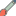

<!doctype html>
<html lang="en">
    <head>
        <meta charset="utf-8">
        <meta http-equiv="X-UA-Compatible" content="IE=edge">
        <meta name="viewport" content="initial-scale=1,user-scalable=no,maximum-scale=1,width=device-width">
        <meta name="mobile-web-app-capable" content="yes">
        <meta name="apple-mobile-web-app-capable" content="yes">
        <link rel="stylesheet" href="css/leaflet.css">
        <link rel="stylesheet" href="css/L.Control.Layers.Tree.css">
        <link rel="stylesheet" href="css/qgis2web.css">
        <link rel="stylesheet" href="css/fontawesome-all.min.css">
        <link rel="stylesheet" href="css/leaflet.photon.css">
        <link rel="stylesheet" href="https://unpkg.com/leaflet-routing-machine/dist/leaflet-routing-machine.css" />
        <style>
        html, body, #map {
            width: 100%;
            height: 100%;
            padding: 0;
            margin: 0;
        }
        /* Hide the blue default Leaflet routing A/B waypoint markers */
        img.leaflet-marker-icon:not([src*="KulturHistorie"]):not([src*="KunstDesign"]):not([src*="OplevelseTema"]) {
            display: none !important;
        }
        img.leaflet-marker-shadow {
            display: none !important;
        }
        /* Walking route styling - hide car icons, show walking style */
        .leaflet-routing-icon {
            background-image: none !important;
        }
        .leaflet-routing-container h2:before {
            content: '🚶 ';
        }
        .leaflet-routing-container h3 {
            font-size: 11px;
            color: #666;
            padding: 4px 10px;
        }
        /* Smaller popup styling */
        .leaflet-popup-content {
            font-size: 11px !important;
            margin: 8px 10px !important;
        }
        .leaflet-popup-content table th {
            font-size: 10px !important;
            padding: 2px 4px !important;
        }
        .leaflet-popup-content table td {
            font-size: 10px !important;
            padding: 2px 4px !important;
        }
        .leaflet-popup-content strong {
            font-size: 12px !important;
        }
        /* Hide white circle background markers visually but keep them clickable */

        .leaflet-pane > svg path.leaflet-interactive[stroke="false"],
        .leaflet-overlay-pane svg path[fill-opacity="1"][stroke="none"] {
            fill-opacity: 0 !important;
        }
        /* Routing panel - styled neatly in top right */
        .leaflet-routing-container {
            background: white;
            border-radius: 8px;
            box-shadow: 0 1px 5px rgba(0,0,0,0.25);
            padding: 0;
            max-width: 280px;
            max-height: 340px;
            overflow-y: auto;
            font-size: 12px;
        }
        .leaflet-routing-container h2 {
            font-size: 13px;
            padding: 8px 10px;
            margin: 0;
            background: #f7f7f7;
            border-bottom: 1px solid #ddd;
            border-radius: 8px 8px 0 0;
        }
        .leaflet-routing-container h3 {
            font-size: 12px;
            padding: 6px 10px;
            margin: 0;
            color: #555;
        }
        .leaflet-routing-alt table {
            width: 100%;
            border-collapse: collapse;
        }
        .leaflet-routing-alt td {
            padding: 4px 8px;
            border-bottom: 1px solid #f0f0f0;
            vertical-align: top;
        }
        .leaflet-routing-alt tr:last-child td {
            border-bottom: none;
        }
        /* Collapse/expand button */
        .leaflet-routing-collapse-btn {
            float: right;
            cursor: pointer;
            padding: 2px 6px;
            font-size: 11px;
            color: #888;
        }
        /* Tidy layer control */
        .leaflet-control-layers {
            border-radius: 6px !important;
            box-shadow: 0 1px 5px rgba(0,0,0,0.2) !important;
        }
        /* Clear route button styling */
        #clearRouteBtn {
            background: white;
            border: 1px solid #ccc;
            border-radius: 6px;
            padding: 6px 12px;
            font-size: 13px;
            cursor: pointer;
            box-shadow: 0 1px 5px rgba(0,0,0,0.2);
        }
        #clearRouteBtn:hover {
            background: #f4f4f4;
        }
        </style>
        <title></title>
    </head>
    <body>
        <div id="map">
        </div>
        <script src="js/qgis2web_expressions.js"></script>
        <script src="js/leaflet.js"></script>
        <script src="js/L.Control.Layers.Tree.min.js"></script>
        <script src="js/multi-style-layer.js"></script>
        <script src="js/leaflet.rotatedMarker.js"></script>
        <script src="js/leaflet.pattern.js"></script>
        <script src="js/leaflet-hash.js"></script>
        <script src="js/Autolinker.min.js"></script>
        <script src="js/rbush.min.js"></script>
        <script src="js/labelgun.min.js"></script>
        <script src="js/labels.js"></script>
        <script src="js/leaflet.photon.js"></script>
        <script src="https://unpkg.com/leaflet-routing-machine/dist/leaflet-routing-machine.min.js"></script>
        <link rel="stylesheet" href="https://unpkg.com/leaflet.markercluster/dist/MarkerCluster.css" />
        <link rel="stylesheet" href="https://unpkg.com/leaflet.markercluster/dist/MarkerCluster.Default.css" />
        <script src="https://unpkg.com/leaflet.markercluster/dist/leaflet.markercluster.js"></script>

        <script src="data/OplevelseTema_1.js"></script>
        <script src="data/KulturHistorie_2.js"></script>
        <script src="data/KunstDesign_3.js"></script>
        <script>
        var map = L.map('map', {
            zoomControl:false, maxZoom:18, minZoom:13,
            maxBounds: [[55.60, 12.45], [55.76, 12.70]],
            maxBoundsViscosity: 1.0
        }).fitBounds([[55.65938478965084,12.542593505678738],[55.70312473283988,12.60106602916065]]);
        var hash = new L.Hash(map);
        map.attributionControl.setPrefix('<a href="https://github.com/tomchadwin/qgis2web" target="_blank">qgis2web</a> &middot; <a href="https://leafletjs.com" title="A JS library for interactive maps">Leaflet</a> &middot; <a href="https://qgis.org">QGIS</a>');
        var autolinker = new Autolinker({truncate: {length: 30, location: 'smart'}});
        // remove popup's row if "visible-with-data"
        function removeEmptyRowsFromPopupContent(content, feature) {
         var tempDiv = document.createElement('div');
         tempDiv.innerHTML = content;
         var rows = tempDiv.querySelectorAll('tr');
         for (var i = 0; i < rows.length; i++) {
             var td = rows[i].querySelector('td.visible-with-data');
             var key = td ? td.id : '';
             if (td && td.classList.contains('visible-with-data') && feature.properties[key] == null) {
                 rows[i].parentNode.removeChild(rows[i]);
             }
         }
         return tempDiv.innerHTML;
        }
        // modify popup if contains media
        function addClassToPopupIfMedia(content, popup) {
            var tempDiv = document.createElement('div');
            tempDiv.innerHTML = content;
            var imgTd = tempDiv.querySelector('td img');
            if (imgTd) {
                var src = imgTd.getAttribute('src');
                if (/\.(jpg|jpeg|png|gif|bmp|webp|avif)$/i.test(src)) {
                    popup._contentNode.classList.add('media');
                    setTimeout(function() {
                        popup.update();
                    }, 10);
                } else if (/\.(mp3|wav|ogg|aac)$/i.test(src)) {
                    var audio = document.createElement('audio');
                    audio.controls = true;
                    audio.src = src;
                    imgTd.parentNode.replaceChild(audio, imgTd);
                    popup._contentNode.classList.add('media');
                    setTimeout(function() {
                        popup.setContent(tempDiv.innerHTML);
                        popup.update();
                    }, 10);
                } else if (/\.(mp4|webm|ogg|mov)$/i.test(src)) {
                    var video = document.createElement('video');
                    video.controls = true;
                    video.src = src;
                    video.style.width = "400px";
                    video.style.height = "300px";
                    video.style.maxHeight = "60vh";
                    video.style.maxWidth = "60vw";
                    imgTd.parentNode.replaceChild(video, imgTd);
                    popup._contentNode.classList.add('media');
                    // Aggiorna il popup quando il video carica i metadati
                    video.addEventListener('loadedmetadata', function() {
                        popup.update();
                    });
                    setTimeout(function() {
                        popup.setContent(tempDiv.innerHTML);
                        popup.update();
                    }, 10);
                } else {
                    popup._contentNode.classList.remove('media');
                }
            } else {
                popup._contentNode.classList.remove('media');
            }
        }
        var zoomControl = L.control.zoom({
            position: 'topleft'
        }).addTo(map);
        var bounds_group = new L.featureGroup([]);
        function setBounds() {
        }
        // One cluster group - small radius so only truly overlapping markers cluster
        var clusterGroup = L.markerClusterGroup({
            maxClusterRadius: 35,
            disableClusteringAtZoom: 17,
            iconCreateFunction: function(cluster) {
                var count = cluster.getChildCount();
                return L.divIcon({
                    className: '',
                    html: '<div style="width:28px;height:28px;background:white;border-radius:50%;box-shadow:0 1px 5px rgba(0,0,0,0.3);display:flex;align-items:center;justify-content:center;font-weight:bold;font-size:12px;color:#333;">' + count + '</div>',
                    iconSize: [28, 28],
                    iconAnchor: [14, 14]
                });
            }
        });
        map.createPane('pane_Positron_0');
        map.getPane('pane_Positron_0').style.zIndex = 400;
        var layer_Positron_0 = L.tileLayer('https://a.basemaps.cartocdn.com/light_all/{z}/{x}/{y}.png', {
            pane: 'pane_Positron_0',
            opacity: 1.0,
            attribution: '<a href="https://cartodb.com/basemaps/">Map tiles by CartoDB, under CC BY 3.0. Data by OpenStreetMap, under ODbL.</a>',
            minZoom: 13,
            maxZoom: 18,
            minNativeZoom: 0,
            maxNativeZoom: 20
        });
        layer_Positron_0;
        map.addLayer(layer_Positron_0);
        function pop_OplevelseTema_1(feature, layer) {
            var popupContent = '<table>\
                    <tr>\
                        <td colspan="2"><strong>Museum</strong><br />' + (feature.properties['Navn'] !== null ? autolinker.link(String(feature.properties['Navn']).replace(/'/g, '\'').toLocaleString()) : '') + '</td>\
                    </tr>\
                    <tr>\
                        <th scope="row">Adresse</th>\
                        <td>' + (feature.properties['Adresse'] !== null ? autolinker.link(String(feature.properties['Adresse']).replace(/'/g, '\'').toLocaleString()) : '') + '</td>\
                    </tr>\
                    <tr>\
                        <th scope="row">By</th>\
                        <td>' + (feature.properties['By'] !== null ? autolinker.link(String(feature.properties['By']).replace(/'/g, '\'').toLocaleString()) : '') + '</td>\
                    </tr>\
                    <tr>\
                        <th scope="row">Hjemmeside</th>\
                        <td>' + (feature.properties['Hjemmeside'] !== null ? autolinker.link(String(feature.properties['Hjemmeside']).replace(/'/g, '\'').toLocaleString()) : '') + '</td>\
                    </tr>\
                    <tr>\
                        <th scope="row">Beskrivelse</th>\
                        <td>' + (feature.properties['Info'] !== null ? autolinker.link(String(feature.properties['Info']).replace(/'/g, '\'').toLocaleString()) : '') + '</td>\
                    </tr>\
                </table>';
            var content = removeEmptyRowsFromPopupContent(popupContent, feature);
			layer.on('popupopen', function(e) {
				addClassToPopupIfMedia(content, e.popup);
			});
			layer.bindPopup(content, { maxHeight: 220, maxWidth: 220 });
        }

        function style_OplevelseTema_1_0() {
            return {
                pane: 'pane_OplevelseTema_1',
                radius: 0,
                stroke: false,
                fill: false,
                fillOpacity: 0,
                fillColor: 'rgba(0,0,0,0)',
                interactive: true,
            }
        }
        function style_OplevelseTema_1_1() {
            return {
                pane: 'pane_OplevelseTema_1',
        rotationAngle: 0.0,
        rotationOrigin: 'center center',
        icon: L.divIcon({
            className: '',
            html: '<div style="width:24px;height:24px;background:white;border-radius:50%;box-shadow:0 1px 4px rgba(0,0,0,0.3);display:flex;align-items:center;justify-content:center;"></div>',
            iconSize: [24, 24],
            iconAnchor: [12, 12],
            popupAnchor: [0, -14]
        }),
                interactive: true,
            }
        }
        map.createPane('pane_OplevelseTema_1');
        map.getPane('pane_OplevelseTema_1').style.zIndex = 401;
        map.getPane('pane_OplevelseTema_1').style['mix-blend-mode'] = 'normal';
        var layer_OplevelseTema_1 = new L.geoJson.multiStyle(json_OplevelseTema_1, {
            attribution: '',
            interactive: true,
            dataVar: 'json_OplevelseTema_1',
            layerName: 'layer_OplevelseTema_1',
            pane: 'pane_OplevelseTema_1',
            onEachFeature: pop_OplevelseTema_1,
            pointToLayers: [function (feature, latlng) {
                var context = {
                    feature: feature,
                    variables: {}
                };
                return L.marker(latlng, style_OplevelseTema_1_1(feature));
            },
        ]});
        bounds_group.addLayer(layer_OplevelseTema_1);
        map.addLayer(layer_OplevelseTema_1);
        function pop_KulturHistorie_2(feature, layer) {
            var popupContent = '<table>\
                    <tr>\
                        <td colspan="2"><strong>Museum</strong><br />' + (feature.properties['Navn'] !== null ? autolinker.link(String(feature.properties['Navn']).replace(/'/g, '\'').toLocaleString()) : '') + '</td>\
                    </tr>\
                    <tr>\
                        <th scope="row">Adresse</th>\
                        <td>' + (feature.properties['Adresse'] !== null ? autolinker.link(String(feature.properties['Adresse']).replace(/'/g, '\'').toLocaleString()) : '') + '</td>\
                    </tr>\
                    <tr>\
                        <th scope="row">By</th>\
                        <td>' + (feature.properties['By'] !== null ? autolinker.link(String(feature.properties['By']).replace(/'/g, '\'').toLocaleString()) : '') + '</td>\
                    </tr>\
                    <tr>\
                        <th scope="row">Hjemmeside</th>\
                        <td>' + (feature.properties['Hjemmeside'] !== null ? autolinker.link(String(feature.properties['Hjemmeside']).replace(/'/g, '\'').toLocaleString()) : '') + '</td>\
                    </tr>\
                    <tr>\
                        <th scope="row">Beskrivelse</th>\
                        <td>' + (feature.properties['Info'] !== null ? autolinker.link(String(feature.properties['Info']).replace(/'/g, '\'').toLocaleString()) : '') + '</td>\
                    </tr>\
                </table>';
            var content = removeEmptyRowsFromPopupContent(popupContent, feature);
			layer.on('popupopen', function(e) {
				addClassToPopupIfMedia(content, e.popup);
			});
			layer.bindPopup(content, { maxHeight: 220, maxWidth: 220 });
        }

        function style_KulturHistorie_2_0() {
            return {
                pane: 'pane_KulturHistorie_2',
                radius: 0,
                stroke: false,
                fill: false,
                fillOpacity: 0,
                fillColor: 'rgba(0,0,0,0)',
                interactive: true,
            }
        }
        function style_KulturHistorie_2_1() {
            return {
                pane: 'pane_KulturHistorie_2',
        rotationAngle: 0.0,
        rotationOrigin: 'center center',
        icon: L.divIcon({
            className: '',
            html: '<div style="width:24px;height:24px;background:white;border-radius:50%;box-shadow:0 1px 4px rgba(0,0,0,0.3);display:flex;align-items:center;justify-content:center;"></div>',
            iconSize: [24, 24],
            iconAnchor: [12, 12],
            popupAnchor: [0, -14]
        }),
                interactive: true,
            }
        }
        map.createPane('pane_KulturHistorie_2');
        map.getPane('pane_KulturHistorie_2').style.zIndex = 402;
        map.getPane('pane_KulturHistorie_2').style['mix-blend-mode'] = 'normal';
        var layer_KulturHistorie_2 = new L.geoJson.multiStyle(json_KulturHistorie_2, {
            attribution: '',
            interactive: true,
            dataVar: 'json_KulturHistorie_2',
            layerName: 'layer_KulturHistorie_2',
            pane: 'pane_KulturHistorie_2',
            onEachFeature: pop_KulturHistorie_2,
            pointToLayers: [function (feature, latlng) {
                var context = {
                    feature: feature,
                    variables: {}
                };
                return L.marker(latlng, style_KulturHistorie_2_1(feature));
            },
        ]});
        bounds_group.addLayer(layer_KulturHistorie_2);
        map.addLayer(layer_KulturHistorie_2);
        function pop_KunstDesign_3(feature, layer) {
            var popupContent = '<table>\
                    <tr>\
                        <td colspan="2"><strong>Museum</strong><br />' + (feature.properties['Navn'] !== null ? autolinker.link(String(feature.properties['Navn']).replace(/'/g, '\'').toLocaleString()) : '') + '</td>\
                    </tr>\
                    <tr>\
                        <th scope="row">Adresse</th>\
                        <td>' + (feature.properties['Adresse'] !== null ? autolinker.link(String(feature.properties['Adresse']).replace(/'/g, '\'').toLocaleString()) : '') + '</td>\
                    </tr>\
                    <tr>\
                        <th scope="row">By</th>\
                        <td class="visible-with-data" id="By">' + (feature.properties['By'] !== null ? autolinker.link(String(feature.properties['By']).replace(/'/g, '\'').toLocaleString()) : '') + '</td>\
                    </tr>\
                    <tr>\
                        <th scope="row">Hjemmeside</th>\
                        <td>' + (feature.properties['Hjemmeside'] !== null ? autolinker.link(String(feature.properties['Hjemmeside']).replace(/'/g, '\'').toLocaleString()) : '') + '</td>\
                    </tr>\
                    <tr>\
                        <th scope="row">Beskrivelse</th>\
                        <td>' + (feature.properties['Info'] !== null ? autolinker.link(String(feature.properties['Info']).replace(/'/g, '\'').toLocaleString()) : '') + '</td>\
                    </tr>\
                </table>';
            var content = removeEmptyRowsFromPopupContent(popupContent, feature);
			layer.on('popupopen', function(e) {
				addClassToPopupIfMedia(content, e.popup);
			});
			layer.bindPopup(content, { maxHeight: 220, maxWidth: 220 });
        }

        function style_KunstDesign_3_0() {
            return {
                pane: 'pane_KunstDesign_3',
                radius: 0,
                stroke: false,
                fill: false,
                fillOpacity: 0,
                fillColor: 'rgba(0,0,0,0)',
                interactive: true,
            }
        }
        function style_KunstDesign_3_1() {
            return {
                pane: 'pane_KunstDesign_3',
        rotationAngle: 0.0,
        rotationOrigin: 'center center',
        icon: L.divIcon({
            className: '',
            html: '<div style="width:24px;height:24px;background:white;border-radius:50%;box-shadow:0 1px 4px rgba(0,0,0,0.3);display:flex;align-items:center;justify-content:center;"></div>',
            iconSize: [24, 24],
            iconAnchor: [12, 12],
            popupAnchor: [0, -14]
        }),
                interactive: true,
            }
        }
        map.createPane('pane_KunstDesign_3');
        map.getPane('pane_KunstDesign_3').style.zIndex = 403;
        map.getPane('pane_KunstDesign_3').style['mix-blend-mode'] = 'normal';
        var layer_KunstDesign_3 = new L.geoJson.multiStyle(json_KunstDesign_3, {
            attribution: '',
            interactive: true,
            dataVar: 'json_KunstDesign_3',
            layerName: 'layer_KunstDesign_3',
            pane: 'pane_KunstDesign_3',
            onEachFeature: pop_KunstDesign_3,
            pointToLayers: [function (feature, latlng) {
                var context = {
                    feature: feature,
                    variables: {}
                };
                return L.marker(latlng, style_KunstDesign_3_1(feature));
            },
        ]});
        bounds_group.addLayer(layer_KunstDesign_3);
        map.addLayer(layer_KunstDesign_3);
        // Keep the original layer tree for basemap toggle
        var overlaysTree = [
            {label: "Positron", layer: layer_Positron_0, radioGroup: 'bm' }
        ];
        var lay = L.control.layers.tree(null, overlaysTree, { collapsed: true });
        lay.addTo(map);

        // Category visibility state
        var categoryVisible = {
            OplevelseTema: true,
            KulturHistorie: true,
            KunstDesign: true
        };

        // Custom category toggle control
        var categoryControl = L.control({position: 'topright'});
        categoryControl.onAdd = function() {
            var div = L.DomUtil.create('div');
            div.style.cssText = 'background:white; border-radius:8px; box-shadow:0 1px 5px rgba(0,0,0,0.2); padding:10px 14px; font-size:13px; min-width:170px;';
            div.innerHTML = '<div style="font-weight:bold; margin-bottom:8px; font-size:13px;">🏛️ Museer</div>' +
                '<label style="display:flex;align-items:center;gap:8px;margin-bottom:6px;cursor:pointer;">' +
                  '<input type="checkbox" id="tog_OplevelseTema" checked style="cursor:pointer;width:14px;height:14px;">' +
                  ' Oplevelse & Tema</label>' +
                '<label style="display:flex;align-items:center;gap:8px;margin-bottom:6px;cursor:pointer;">' +
                  '<input type="checkbox" id="tog_KulturHistorie" checked style="cursor:pointer;width:14px;height:14px;">' +
                  ' Kultur & Historie</label>' +
                '<label style="display:flex;align-items:center;gap:8px;cursor:pointer;">' +
                  '<input type="checkbox" id="tog_KunstDesign" checked style="cursor:pointer;width:14px;height:14px;">' +
                  ' Kunst & Design</label>';
            L.DomEvent.disableClickPropagation(div);
            return div;
        };
        categoryControl.addTo(map);

        // Build cluster layers directly from raw JSON - bypasses multiStyle completely
        function makeClusterIcon(svgFile) {
            return L.divIcon({
                className: '',
                html: '<div style="width:24px;height:24px;background:white;border-radius:50%;box-shadow:0 1px 4px rgba(0,0,0,0.3);display:flex;align-items:center;justify-content:center;"></div>',
                iconSize: [24, 24],
                iconAnchor: [12, 12],
                popupAnchor: [0, -14]
            });
        }

        function makeClusterLayer(jsonData, svgFile, popupFn) {
            return L.geoJSON(jsonData, {
                pointToLayer: function(feature, latlng) {
                    return L.marker(latlng, { icon: makeClusterIcon(svgFile) });
                },
                onEachFeature: function(feature, layer) {
                    popupFn(feature, layer);
                    attachRouting(layer);
                }
            });
        }

        // Popup builder for cluster markers
        function buildPopup(feature, layer) {
            var p = feature.properties;
            var html = '<table>' +
                '<tr><td colspan="2"><strong>' + (p['Navn'] || '') + '</strong></td></tr>' +
                '<tr><th>Adresse</th><td>' + (p['Adresse'] || '') + '</td></tr>' +
                '<tr><th>By</th><td>' + (p['By'] || '') + '</td></tr>' +
                '<tr><th>Hjemmeside</th><td>' + (p['Hjemmeside'] ? autolinker.link(String(p['Hjemmeside'])) : '') + '</td></tr>' +
                '<tr><th>Beskrivelse</th><td>' + (p['Info'] || '') + '</td></tr>' +
                '</table>';
            layer.bindPopup(html, { maxHeight: 220, maxWidth: 220 });
        }

        // Hide the original multiStyle layers (they would double up visually)
        map.removeLayer(layer_OplevelseTema_1);
        map.removeLayer(layer_KulturHistorie_2);
        map.removeLayer(layer_KunstDesign_3);

        // Create clean cluster layers from raw JSON
        var cluster_Oplevelse  = makeClusterLayer(json_OplevelseTema_1,  'OplevelseTema_1.svg',  buildPopup);
        var cluster_Kultur     = makeClusterLayer(json_KulturHistorie_2, 'KulturHistorie_2.svg', buildPopup);
        var cluster_Kunst      = makeClusterLayer(json_KunstDesign_3,    'KunstDesign_3.svg',    buildPopup);

        // Add each to clusterGroup
        clusterGroup.addLayer(cluster_Oplevelse);
        clusterGroup.addLayer(cluster_Kultur);
        clusterGroup.addLayer(cluster_Kunst);
        map.addLayer(clusterGroup);

        // Toggle logic - always remove first then re-add to avoid duplicates
        function toggleCategory(clusterLayer, visible) {
            if (visible) {
                clusterGroup.removeLayer(clusterLayer);
                clusterGroup.addLayer(clusterLayer);
            } else {
                clusterGroup.removeLayer(clusterLayer);
            }
        }

        document.addEventListener('change', function(e) {
            if (e.target.id === 'tog_OplevelseTema') toggleCategory(cluster_Oplevelse, e.target.checked);
            if (e.target.id === 'tog_KulturHistorie') toggleCategory(cluster_Kultur,   e.target.checked);
            if (e.target.id === 'tog_KunstDesign')    toggleCategory(cluster_Kunst,    e.target.checked);
        });
        setBounds();

        // Routing - hidden A/B markers, click museums to route
        var selectedPoints = [];
        var selectedMuseums = [];

        // Create routing control with invisible waypoint markers
        var routingControl = L.Routing.control({
            waypoints: [],
            routeWhileDragging: false,
            router: L.Routing.osrmv1({
                serviceUrl: 'https://routing.openstreetmap.de/routed-foot/route/v1',
                profile: 'routed-foot'
            }),
            formatter: new (L.Routing.Formatter.extend({
                formatTime: function(t) {
                    var hours = Math.floor(t / 3600);
                    var mins = Math.round((t % 3600) / 60);
                    if (hours > 0) return hours + ' t ' + mins + ' min gang';
                    if (mins === 0) return '< 1 min gang';
                    return mins + ' min gang';
                }
            }))({
                units: 'metric',
                roundingSensitivity: 1
            }),
            show: true,
            collapsible: true,
            collapseBtn: function(btn) {
                btn.innerHTML = '▲ Hide';
            },
            collapseIcon: function(btn) {
                btn.innerHTML = '▼ Directions';
            },
            addWaypoints: false,
            fitSelectedRoutes: true,
            createMarker: function() { return null; }, // hides the blue A/B markers
            lineOptions: {
                styles: [{ color: '#e8360e', weight: 5 }]
            }
        }).addTo(map);

        // Status label on the map
        var statusDiv = L.control({position: 'bottomleft'});
        statusDiv.onAdd = function() {
            this._div = L.DomUtil.create('div');
            this._div.style.cssText = 'background:white; padding:8px 12px; border-radius:6px; border:1px solid #ccc; font-size:13px; max-width:220px;';
            this._div.innerHTML = '🖱️ Click a museum to set <b>Start</b>';
            return this._div;
        };
        statusDiv.addTo(map);

        // Add Clear Route button just above the status box via a separate control
        var clearControl = L.control({position: 'bottomleft'});
        clearControl.onAdd = function() {
            var btn = L.DomUtil.create('button');
            btn.id = 'clearRouteBtn';
            btn.innerHTML = '🗺️ Clear Route';
            btn.style.cssText = 'display:block; width:100%; background:white; border:1px solid #ccc; border-radius:6px; padding:7px 12px; font-size:13px; cursor:pointer; box-shadow:0 1px 5px rgba(0,0,0,0.2); margin-bottom:4px;';
            btn.onmouseover = function(){ btn.style.background='#f4f4f4'; };
            btn.onmouseout = function(){ btn.style.background='white'; };
            L.DomEvent.on(btn, 'click', function(e) {
                L.DomEvent.stopPropagation(e);
                selectedPoints=[]; selectedMuseums=[]; routingControl.setWaypoints([]); updateStatus();
            });
            return btn;
        };
        clearControl.addTo(map);

        function updateStatus() {
            if (selectedMuseums.length === 0) {
                statusDiv._div.innerHTML = '🖱️ Click a museum to set <b>Start</b>';
            } else if (selectedMuseums.length === 1) {
                statusDiv._div.innerHTML = '✅ Start: <b>' + selectedMuseums[0] + '</b><br>🖱️ Click another museum for <b>End</b>';
            } else {
                statusDiv._div.innerHTML = '✅ Start: <b>' + selectedMuseums[0] + '</b><br>✅ End: <b>' + selectedMuseums[1] + '</b><br><i>Click any museum to reset</i>';
            }
        }
        updateStatus();

        // Function to attach click-to-route to any layer
        function attachRouting(layer) {
            layer.on('click', function(e) {
                L.DomEvent.stopPropagation(e);
                var latlng = e.latlng;
                var name = (e.target && e.target.feature && e.target.feature.properties && e.target.feature.properties['Navn']) ? e.target.feature.properties['Navn'] : 'Museum';

                if (selectedPoints.length >= 2) {
                    selectedPoints = [];
                    selectedMuseums = [];
                    routingControl.setWaypoints([]);
                }

                selectedPoints.push(latlng);
                selectedMuseums.push(name);
                routingControl.setWaypoints(selectedPoints);
                updateStatus();
            });
        }

        // Routing attached inside makeClusterLayer


        </script>

        <!-- Clear Route Button -->
        
    </body>
</html>
